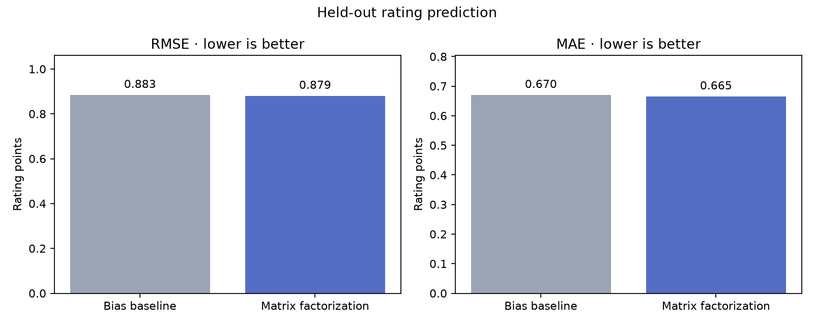
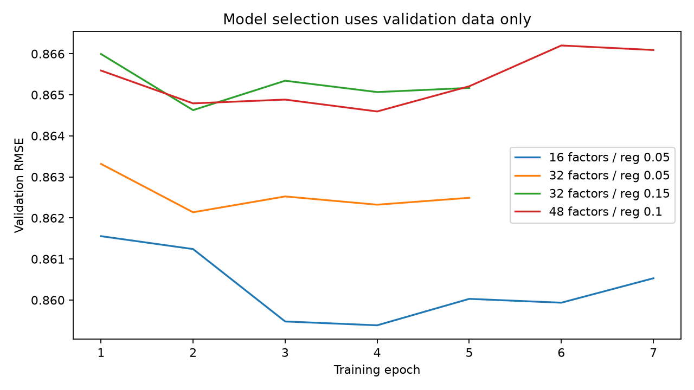

Learn from ratings
A seeded sample of MovieLens users supplies observed ratings. Missing ratings are unknown, never zero-star reviews.
MOVIE RECOMMENDATIONS / DATA SCIENCE TASK 07
Explore movies through patterns in audience ratings.
A small introduction to the science of “you might also like.”
Loading the recommendation model…
MAKE IT PERSONAL
Rate at least three films you’ve seen. Your ratings stay on this page and are cleared when you refresh.
These are anonymized dataset users. Recommendations exclude all their known rated movies.
YOUR SHORTLIST
Scores estimate a 0.5–5 star rating, not a probability that you will watch or enjoy a film. With only a few ratings, treat these as starting points.
SHOW THE WORK
Compare matrix factorization with a regularized user/movie-bias baseline. Lower error is better.


ANOTHER WAY TO EVALUATE
In a supplementary ranking audit of 200 sampled users, the factor model recovered fewer held-out favourites than a Bayesian movie-average baseline.
Higher is better for these ranking measures. Relevant items are test movies rated at least four stars. Unrated movies have unknown relevance. This sparse-feedback audit is exploratory and does not measure visitor satisfaction. Its movie-average baseline differs from the user/movie-bias baseline above.
BEHIND THE RECOMMENDATIONS
A seeded sample of MovieLens users supplies observed ratings. Missing ratings are unknown, never zero-star reviews.
Matrix factorization learns a short numerical profile for each user and film. Compatible profiles produce higher estimated ratings.
Your ratings fit a new profile against the learned movie factors. The movie model stays fixed, and rated films are removed from the shortlist.
The new-visitor profile uses regularized least squares. Reported test errors evaluate established dataset users, not the onboarding experience. Recommendations require at least 20 training ratings per movie, favoring better-supported films. Per-user chronological splits are not a globally prospective backtest. The catalogue is historical and does not cover 2026 releases.
Dataset: MovieLens 32M, GroupLens · Dataset attribution and terms